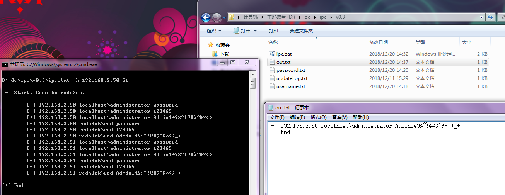

¶0x01 前言
在内网环境中，掌握一些密码后，最基础，最有效获取服务器权限的方式即ipc暴破
关于ipc暴破，这类工具在网上见的不多。目前工作中见到的有直接开无数个cmd的伪bat，还有身边同事powershell写的ps1，powershell是挺好用的，但有个关键问题是目标机器必须是win7及以上，遇到老机器当然是没法用了。
因此，bat无疑是首选，因其语言较底层，不够高级，写起来比较吃力
花了几天时间改了几个版本，解决了密码特殊字符，菜刀判断进程等各种问题，更新日志在update.txt，应用在自己的实战中。
阅读本篇文章能了解到：IPC, Bat
¶0x02 Bat
需要提供以下两个文件
username.txt,password.txt
password.txt：不必多说，放入密码即可，一行一个
username.txt：放入对应的域\用户，大概是win2012以上域时，在ipc连接时必须加入域，为了兼容高版本，所以直接以域\用户形式存入文件
举个例子：
1 | localhost\administrator |
本来想直接在bat中用数组写入username，因为批处理中不自带数组功能，先是实现了数组，结果因为变量延迟导致密码为特殊字符时，如!,^等，导致这些字符无法带入命令，会被批处理吞没，花了好久时间也没搞定如何解决此问题，有解决方法的老哥还望指导
¶截图

温馨提示：程序启动会在当前目录生成`ip.txt`，即`-h`参数指定的ip段，程序结束时会自动删除并生成`out.txt`。
¶0x03 Code
1 | @echo off |